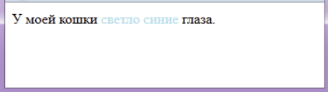
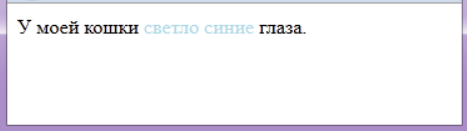

Теги <section> , <div> , <span>
- Тег <section></section>
- Тег <section> используется для крупных смысловых разделов.
Когда использовать <section>? Когда содержимое блока содержит информацию по конкретной теме.
Например: для блока новостей, контактной информации, глав текста, вкладок в диалоговом окне - Тег <div></div>
- Тег <div> является блочным тегом , который используется для выделения фрагмента документа с целью изменения вида содержимого
Тег <div> не передает информацию , в отличии от тега <section> - Тег <span></span>
- Тег <span> является строчным тегом , который обычно используется для выделения части информации внутри других тегов и установления для нее свой стиль.
Визуальный пример использования <div>
Визуальный пример использования <span>
 

Теги <nav>, <article> , <aside>
- Тег <nav></nav>
- Тег <nav> используется для определения секции , в которой находится ссылки навигациию.
Не включает в себя все ссылки страницы , а только на другие страницы или же внутри страницы. - Тег <article></article>
- Тег <article> обозначает самостоятельный фрагмент информации.Например: новости, статьи, записи блога, форума или др.
Тег <article> отличается от <section> тем , что его можно вырвать из одного места и вставить в другое (на другую страницу сайта или на другой сайт). - Тег <aside></aside>
- Определяет блок сбоку от контента.Обычно называют сайтбаром.
Пример использования: ссылки на архив, меток и так далее.
Визуальное использование <nav> , <article> , <aside>